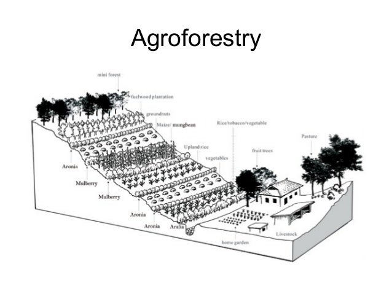

Crop-Goat-Agroforestry
The "Dryland ATM" Model: Ensuring survival and profit even in drought-prone regions.
1. Site Feasibility & Pre-requisites
🌾 Fodder Banks
Drought Insurance.
You must dedicate land to drought-resistant grasses like Napier or Stylo. These act as "Fodder
Banks" to feed goats when rain fails.
💧 Water Harvesting
Farm Ponds.
Since this is a dryland model, you must build swales or bunds to catch every drop of rain.
Rain-fed crops depend on this stored soil moisture.
🐐 Goat Breed
Hardy Breeds.
Select breeds that thrive in harsh heat and can eat diverse vegetation, such as Boer or local
hardy varieties.
2. Infrastructure & Layout
The layout focuses on protecting the crops from goats while allowing trees to protect the soil.
🚧 Construction Specs
- Elevated Housing: Build goat sheds on raised platforms (slatted floors). This prevents foot rot and pneumonia caused by damp ground.
- Alley Cropping: Plant crops in "alleys" between rows of trees. The trees act as windbreaks and prevent soil erosion.
- Fencing: Strong perimeter fencing is mandatory. Goats are notorious escape artists and will destroy your main crop if loose.
3. The Nutrient Cycle
Goats convert "waste" (crop residue) into "gold" (manure) for the poor dryland soil.
Stalks/Leaves after harvest
Graze on Residue & Trees
Rich Fertilizer
Manure restores Soil Health
4. Operational Calendar
Managing the "Gap" periods (dry seasons) is the secret to success in this model.
Sow main crops. Goats are kept in the shed or grazed on wasteland, NOT in the main field.
Harvest excess green fodder and preserve it as Silage/Hay. This is your food stock for the upcoming dry summer.
Crops are harvested. Release goats into the field to graze on stubble/residue. This cleans the field for next year.
Prune tree branches. Feed leaves to goats. The pruning allows sunlight to reach the ground for the next crop cycle.
5. Risks & Solutions
⚠️ RISK: CROP DESTRUCTION
Goats eat everything. If goats enter the field while crops are young, they will wipe out the harvest in hours. Maintain fences daily.
| Problem | Solution |
|---|---|
| Foot Rot Disease | Caused by wet ground. Use Elevated Platform housing. |
| Fodder Shortage | Use tree leaves (Agroforestry) and stored Silage during droughts. |
6. Economics
💰 Liquid Assets
- Goats (The ATM): Can be sold instantly whenever cash is needed. High demand for meat (Chevon).
- Timber/Fruit: Agroforestry trees provide long-term lump sum income (timber) or seasonal fruit.
🛡️ Resilience
- Crop Failure: If rains fail and crops die, feed the dried crop to goats. You still get income from the animals.
- Soil Value: Trees prevent topsoil erosion, maintaining land value over decades.